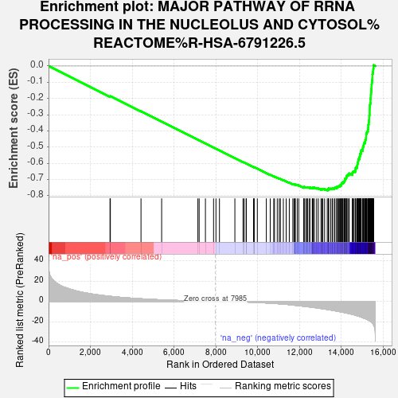
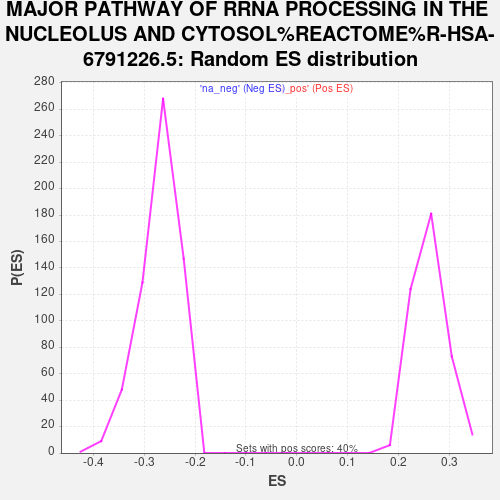

| Dataset | Combo_vs_Naive_Ranked_Genes |
| Phenotype | NoPhenotypeAvailable |
| Upregulated in class | na_neg |
| GeneSet | MAJOR PATHWAY OF RRNA PROCESSING IN THE NUCLEOLUS AND CYTOSOL%REACTOME%R-HSA-6791226.5 |
| Enrichment Score (ES) | -0.7669901 |
| Normalized Enrichment Score (NES) | -2.841448 |
| Nominal p-value | 0.0 |
| FDR q-value | 0.0 |
| FWER p-Value | 0.0 |

| SYMBOL | RANK IN GENE LIST | RANK METRIC SCORE | RUNNING ES | CORE ENRICHMENT | |
|---|---|---|---|---|---|
| 1 | RRP7A | 2940 | 5.010 | -0.1875 | No |
| 2 | ERI1 | 2957 | 4.958 | -0.1860 | No |
| 3 | RIOK2 | 4422 | 2.525 | -0.2793 | No |
| 4 | RPL36A | 5410 | 1.485 | -0.3424 | No |
| 5 | BUD23 | 7143 | 0.324 | -0.4542 | No |
| 6 | RIOK3 | 7204 | 0.299 | -0.4579 | No |
| 7 | UTP25 | 7504 | 0.164 | -0.4772 | No |
| 8 | RPP14 | 7893 | 0.026 | -0.5022 | No |
| 9 | RPP30 | 8008 | -0.007 | -0.5096 | No |
| 10 | FCF1 | 8175 | -0.057 | -0.5203 | No |
| 11 | DIS3 | 8912 | -0.345 | -0.5677 | No |
| 12 | RPP38 | 9302 | -0.576 | -0.5926 | No |
| 13 | PDCD11 | 9356 | -0.609 | -0.5957 | No |
| 14 | ISG20L2 | 9453 | -0.669 | -0.6016 | No |
| 15 | PWP2 | 9459 | -0.674 | -0.6015 | No |
| 16 | KRR1 | 9804 | -0.950 | -0.6233 | No |
| 17 | EXOSC1 | 9826 | -0.968 | -0.6241 | No |
| 18 | UTP3 | 9833 | -0.975 | -0.6240 | No |
| 19 | RBM28 | 9987 | -1.116 | -0.6333 | No |
| 20 | RPS27L | 10417 | -1.571 | -0.6603 | No |
| 21 | DDX52 | 10603 | -1.791 | -0.6713 | No |
| 22 | CSNK1E | 10772 | -1.994 | -0.6811 | No |
| 23 | TEX10 | 10807 | -2.049 | -0.6822 | No |
| 24 | RPP25 | 10940 | -2.263 | -0.6896 | No |
| 25 | EXOSC8 | 11033 | -2.394 | -0.6943 | No |
| 26 | UTP6 | 11090 | -2.508 | -0.6966 | No |
| 27 | EXOSC6 | 11231 | -2.726 | -0.7043 | No |
| 28 | WDR46 | 11366 | -2.970 | -0.7114 | No |
| 29 | UTP11 | 11515 | -3.248 | -0.7193 | No |
| 30 | EXOSC3 | 11685 | -3.638 | -0.7283 | No |
| 31 | MTREX | 11740 | -3.779 | -0.7298 | No |
| 32 | UTP15 | 11778 | -3.868 | -0.7302 | No |
| 33 | DDX49 | 11804 | -3.925 | -0.7298 | No |
| 34 | NOL9 | 11896 | -4.131 | -0.7335 | No |
| 35 | UTP14A | 11969 | -4.277 | -0.7360 | No |
| 36 | RPL36AL | 12207 | -4.851 | -0.7488 | No |
| 37 | IMP3 | 12222 | -4.870 | -0.7472 | No |
| 38 | SENP3 | 12223 | -4.872 | -0.7446 | No |
| 39 | RPS20 | 12305 | -5.078 | -0.7472 | No |
| 40 | UTP4 | 12364 | -5.210 | -0.7483 | No |
| 41 | PES1 | 12400 | -5.302 | -0.7478 | No |
| 42 | RCL1 | 12483 | -5.516 | -0.7502 | No |
| 43 | NIP7 | 12499 | -5.557 | -0.7483 | No |
| 44 | WDR75 | 12613 | -5.889 | -0.7525 | No |
| 45 | RPP40 | 12627 | -5.924 | -0.7503 | No |
| 46 | LAS1L | 12661 | -5.977 | -0.7493 | No |
| 47 | EXOSC10 | 12717 | -6.143 | -0.7497 | No |
| 48 | C1D | 12824 | -6.435 | -0.7532 | No |
| 49 | EXOSC9 | 12906 | -6.638 | -0.7550 | No |
| 50 | NOL12 | 13032 | -7.079 | -0.7594 | No |
| 51 | RPS9 | 13070 | -7.185 | -0.7581 | No |
| 52 | PNO1 | 13120 | -7.346 | -0.7574 | No |
| 53 | EMG1 | 13204 | -7.616 | -0.7588 | No |
| 54 | DCAF13 | 13331 | -7.987 | -0.7628 | Yes |
| 55 | WDR36 | 13385 | -8.140 | -0.7620 | Yes |
| 56 | RPLP1 | 13394 | -8.178 | -0.7583 | Yes |
| 57 | RPL17 | 13395 | -8.186 | -0.7541 | Yes |
| 58 | RRP1 | 13495 | -8.540 | -0.7560 | Yes |
| 59 | MPHOSPH6 | 13567 | -8.837 | -0.7560 | Yes |
| 60 | EXOSC5 | 13588 | -8.883 | -0.7527 | Yes |
| 61 | SNU13 | 13676 | -9.198 | -0.7536 | Yes |
| 62 | RPS10 | 13697 | -9.307 | -0.7500 | Yes |
| 63 | MPHOSPH10 | 13788 | -9.634 | -0.7508 | Yes |
| 64 | RRP36 | 13789 | -9.642 | -0.7458 | Yes |
| 65 | RPL22 | 13825 | -9.764 | -0.7430 | Yes |
| 66 | DHX37 | 13878 | -9.970 | -0.7412 | Yes |
| 67 | RPL28 | 13924 | -10.172 | -0.7388 | Yes |
| 68 | XRN2 | 13950 | -10.273 | -0.7351 | Yes |
| 69 | UBA52 | 14000 | -10.461 | -0.7328 | Yes |
| 70 | RRP9 | 14003 | -10.486 | -0.7275 | Yes |
| 71 | EXOSC2 | 14022 | -10.539 | -0.7232 | Yes |
| 72 | RPS27 | 14072 | -10.775 | -0.7208 | Yes |
| 73 | RPS23 | 14079 | -10.795 | -0.7156 | Yes |
| 74 | FAU | 14130 | -10.979 | -0.7131 | Yes |
| 75 | RPS29 | 14153 | -11.093 | -0.7088 | Yes |
| 76 | RPS26 | 14175 | -11.191 | -0.7043 | Yes |
| 77 | LTV1 | 14177 | -11.202 | -0.6986 | Yes |
| 78 | FTSJ3 | 14187 | -11.242 | -0.6933 | Yes |
| 79 | BMS1 | 14239 | -11.509 | -0.6906 | Yes |
| 80 | PELP1 | 14251 | -11.563 | -0.6853 | Yes |
| 81 | NOL6 | 14254 | -11.577 | -0.6794 | Yes |
| 82 | HEATR1 | 14269 | -11.634 | -0.6743 | Yes |
| 83 | RPL39 | 14315 | -11.796 | -0.6711 | Yes |
| 84 | EBNA1BP2 | 14369 | -12.096 | -0.6682 | Yes |
| 85 | RPL34 | 14379 | -12.128 | -0.6625 | Yes |
| 86 | BYSL | 14530 | -12.808 | -0.6656 | Yes |
| 87 | RPL30 | 14531 | -12.809 | -0.6589 | Yes |
| 88 | RIOK1 | 14552 | -12.918 | -0.6535 | Yes |
| 89 | NOP58 | 14595 | -13.197 | -0.6494 | Yes |
| 90 | RPL41 | 14670 | -13.657 | -0.6470 | Yes |
| 91 | BOP1 | 14671 | -13.662 | -0.6399 | Yes |
| 92 | RPS28 | 14685 | -13.802 | -0.6336 | Yes |
| 93 | RPS12 | 14691 | -13.869 | -0.6267 | Yes |
| 94 | RPL7 | 14752 | -14.198 | -0.6232 | Yes |
| 95 | RPS16 | 14762 | -14.259 | -0.6164 | Yes |
| 96 | RPS13 | 14767 | -14.275 | -0.6093 | Yes |
| 97 | WDR3 | 14779 | -14.331 | -0.6025 | Yes |
| 98 | WDR12 | 14800 | -14.490 | -0.5963 | Yes |
| 99 | NOB1 | 14805 | -14.504 | -0.5890 | Yes |
| 100 | RPL29 | 14816 | -14.610 | -0.5821 | Yes |
| 101 | RPL31 | 14818 | -14.636 | -0.5746 | Yes |
| 102 | IMP4 | 14866 | -14.896 | -0.5699 | Yes |
| 103 | RPL37 | 14867 | -14.901 | -0.5621 | Yes |
| 104 | UTP18 | 14889 | -15.075 | -0.5556 | Yes |
| 105 | RPS5 | 14900 | -15.172 | -0.5484 | Yes |
| 106 | DDX47 | 14904 | -15.203 | -0.5407 | Yes |
| 107 | RPL15 | 14943 | -15.508 | -0.5351 | Yes |
| 108 | NOL11 | 14947 | -15.530 | -0.5272 | Yes |
| 109 | RPS14 | 14956 | -15.573 | -0.5197 | Yes |
| 110 | RPS21 | 15028 | -16.103 | -0.5159 | Yes |
| 111 | CSNK1D | 15033 | -16.128 | -0.5078 | Yes |
| 112 | WDR18 | 15037 | -16.157 | -0.4996 | Yes |
| 113 | RPS27A | 15057 | -16.318 | -0.4923 | Yes |
| 114 | RPL24 | 15076 | -16.538 | -0.4849 | Yes |
| 115 | NOP14 | 15080 | -16.556 | -0.4765 | Yes |
| 116 | EXOSC7 | 15130 | -16.970 | -0.4709 | Yes |
| 117 | RPS6 | 15146 | -17.044 | -0.4630 | Yes |
| 118 | RPS4X | 15152 | -17.085 | -0.4544 | Yes |
| 119 | RPL3 | 15183 | -17.325 | -0.4474 | Yes |
| 120 | RPL10 | 15188 | -17.353 | -0.4386 | Yes |
| 121 | RPS15A | 15192 | -17.388 | -0.4298 | Yes |
| 122 | RPL13A | 15193 | -17.407 | -0.4207 | Yes |
| 123 | RPS11 | 15211 | -17.568 | -0.4127 | Yes |
| 124 | RPL37A | 15232 | -17.712 | -0.4048 | Yes |
| 125 | RPL27A | 15275 | -18.212 | -0.3981 | Yes |
| 126 | RPS3 | 15279 | -18.249 | -0.3888 | Yes |
| 127 | RPL13 | 15287 | -18.364 | -0.3797 | Yes |
| 128 | RPS19 | 15292 | -18.405 | -0.3704 | Yes |
| 129 | RPL21 | 15294 | -18.423 | -0.3609 | Yes |
| 130 | RPLP0 | 15318 | -18.677 | -0.3527 | Yes |
| 131 | RPL26L1 | 15321 | -18.689 | -0.3431 | Yes |
| 132 | RPL26 | 15328 | -18.759 | -0.3337 | Yes |
| 133 | RPLP2 | 15337 | -18.934 | -0.3244 | Yes |
| 134 | RPL11 | 15339 | -18.965 | -0.3146 | Yes |
| 135 | GNL3 | 15342 | -19.020 | -0.3049 | Yes |
| 136 | TSR1 | 15354 | -19.227 | -0.2956 | Yes |
| 137 | RPS7 | 15358 | -19.289 | -0.2858 | Yes |
| 138 | RPL38 | 15360 | -19.294 | -0.2758 | Yes |
| 139 | RPL22L1 | 15362 | -19.310 | -0.2659 | Yes |
| 140 | RPL18 | 15365 | -19.356 | -0.2559 | Yes |
| 141 | RPS24 | 15368 | -19.400 | -0.2460 | Yes |
| 142 | RPL23 | 15374 | -19.439 | -0.2362 | Yes |
| 143 | RPL5 | 15391 | -19.729 | -0.2270 | Yes |
| 144 | RPL27 | 15400 | -19.851 | -0.2172 | Yes |
| 145 | WDR43 | 15401 | -19.903 | -0.2069 | Yes |
| 146 | RPS15 | 15407 | -19.989 | -0.1968 | Yes |
| 147 | RPL12 | 15414 | -20.092 | -0.1868 | Yes |
| 148 | RPL18A | 15417 | -20.136 | -0.1765 | Yes |
| 149 | UTP20 | 15425 | -20.282 | -0.1664 | Yes |
| 150 | NOP56 | 15432 | -20.375 | -0.1562 | Yes |
| 151 | DDX21 | 15438 | -20.495 | -0.1459 | Yes |
| 152 | RPL6 | 15444 | -20.577 | -0.1355 | Yes |
| 153 | RPL32 | 15450 | -20.711 | -0.1251 | Yes |
| 154 | RPL8 | 15452 | -20.733 | -0.1144 | Yes |
| 155 | RPL35A | 15461 | -20.888 | -0.1040 | Yes |
| 156 | RPL35 | 15473 | -21.150 | -0.0938 | Yes |
| 157 | RPL14 | 15482 | -21.351 | -0.0832 | Yes |
| 158 | RPL36 | 15489 | -21.452 | -0.0724 | Yes |
| 159 | RPL19 | 15492 | -21.474 | -0.0614 | Yes |
| 160 | RPS8 | 15493 | -21.476 | -0.0502 | Yes |
| 161 | RPL23A | 15508 | -21.696 | -0.0399 | Yes |
| 162 | RPSA | 15525 | -22.256 | -0.0294 | Yes |
| 163 | RPL10A | 15532 | -22.537 | -0.0180 | Yes |
| 164 | RPL4 | 15544 | -23.165 | -0.0067 | Yes |
| 165 | NCL | 15547 | -23.404 | 0.0053 | Yes |
